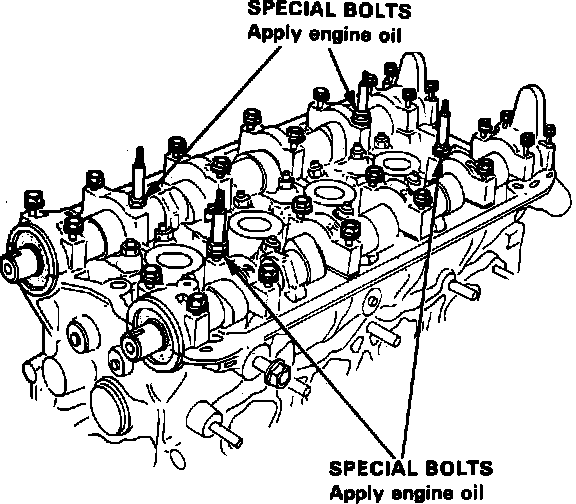
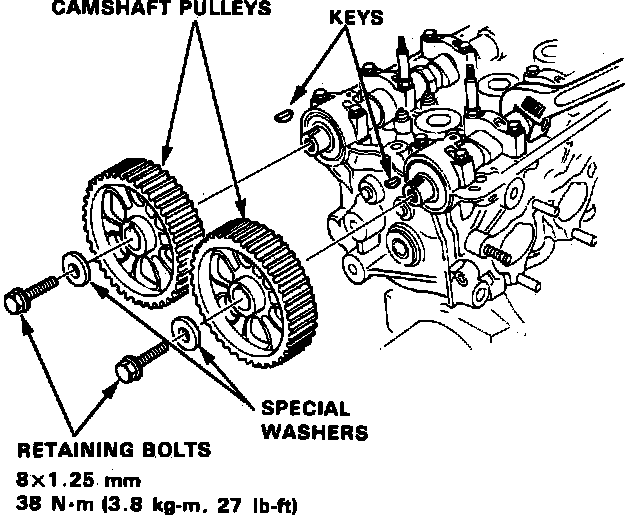

Rocker Arm Assembly: Service and Repair
Fig. 41 Camshaft Holder Installation:

Fig. 42 Camshaft Pulley Installation:

1. On 1989 models, perform steps 1 through 20 under CYLINDER HEAD.
2. On 1990-93 models, perform steps 1 through 23 under CYLINDER HEAD.
3. Install rocker arms and camshaft as follows:
a. Position rocker arms on pivot bolts and valve stems in their original positions.
b. Install camshafts and seals with open side facing in. Ensure keyways on camshafts are facing up.
c. Apply suitable sealant to cylinder head mating surfaces of Nos. 1 and 6 camshaft holders, then install and temporarily tighten all holders. Apply clean engine oil to bolts indicated in Fig. 41.
d. Install camshaft seals using a suitable driver.
e. Torque camshaft holder attaching bolts to specifications. Alternately tighten bolts two turns at a time to prevent rocker arms from binding on valves.
f. Install camshaft keys and pulleys, Fig. 42.